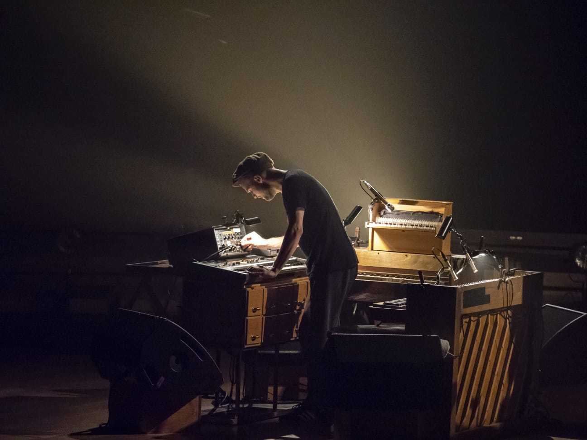

Nils Frahm is a German musician, composer, and record producer based in Berlin. He is known for combining classical and electronic music and for an unconventional approach to the piano in which he mixes a grand piano, upright piano, Roland Juno-60, Rhodes piano, drum machines, and Moog Taurus.
Nils Frahm live
Nils Frahm is known for his live performances just as much as for his records. He often times improvises some of his most popular songs to create what many might refer to as an on the spot masterpiece.
Nils Frahm's Says
Nils Frahm's masterpiece Says recieved cirtical acclaim with it's simple and complex urges throughout the 8 minute runtime. It's slow build up through haunting moments of silece make the grand conclusion of the song all the more satisfying.
For More Nils Frahm
For more Nils Frahm information Click Here
